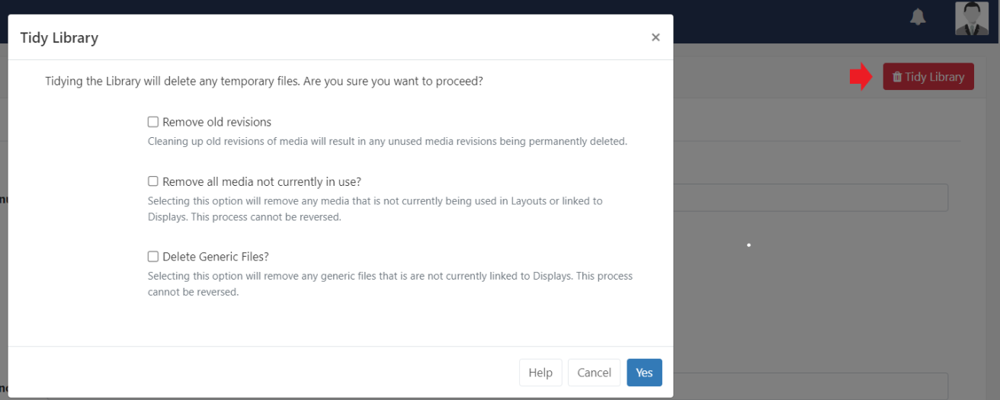
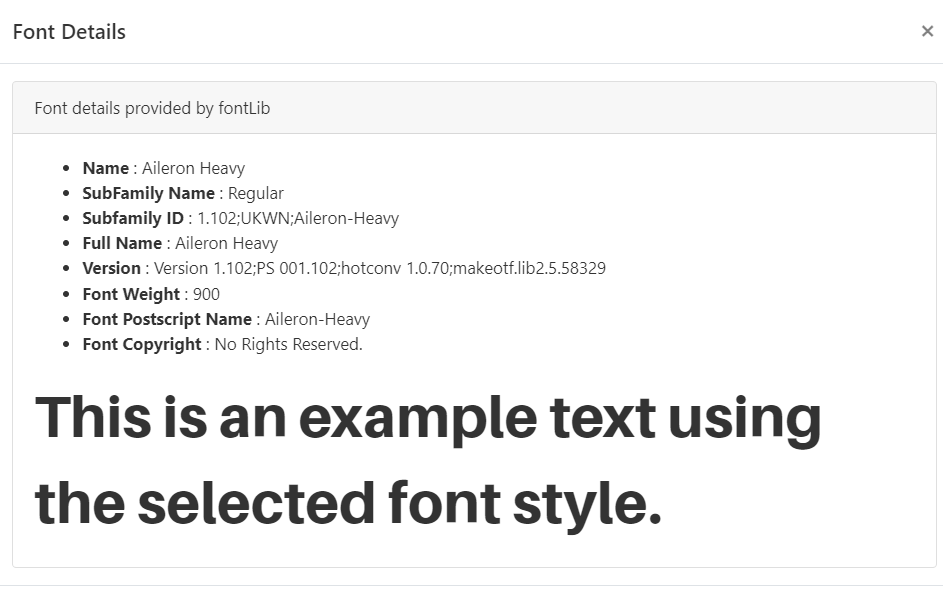

CMS Administrator Settings
Like any complex application, the BI Square Brand Activation CMS comes with a number of configurable options. These are located from the Settings page under the Administration section of the main CMS menu.
Settings are split into related category tabs:

Configuration
From this tab view the CMS Secret Key which is used to authenticate Players with the CMS and apply a Theme to pages (if applicable) as well as setting the default positioning for the Navigation Menu.
Defaults
Use this tab to apply defaults to all Media files and set default Transitions.
You can also set Layouts to automatically Publish 30 minutes after the last recorded edit by enabling the checkbox for this setting.
Resizing Images
Default thresholds and limits can be specified which are then considered in the event an image should be resized. This could be when uploading an image or an image being downloaded by a Widget - NASA RSS in a Ticker Widget for example.
-
Resize Threshold
Set a maximum threshold (based on the longest side) that should be considered for resizing an image.
If you set a Resize Threshold of 1920 and you upload/download an image which is 800, this image would not need resizing. If you uploaded/downloaded an image which was 2400, this would then be resized to 1920.
-
Resize Limit
Set a limit (based on the longest side) for uploaded/downloaded images. Images that exceed this limit will not be processed and should be replaced with another image that is within the limit.
This setting will determine whether the image file is too large to be processed.
-
DataSet maximum number of Rows
Set the maximum permitted number of rows a User can create in a DataSet.
Displays
Set defaults for Latitude and Longitude for all Geo aware previews throughout the CMS.
Default Layout
The Default Layout set here will be automatically assigned to all Displays to be shown when no other content is scheduled or if there is an issue which prevents a scheduled Event from being shown.
This global Default Layout can be overridden for individual Displays by selecting an alternative Default Layout to be used.
Proof of Play Default Settings
Set the Aggregation level of collection of Proof of Play statistics to be applied to all Layouts / Media and Widget items as default.
- Individual - statistics are recorded at the start and finish of each item individually and sent back to the CMS at each collection interval.
- Hourly - records each item once, and includes the total number of times played and the length of time played during the hour and is sent back to the CMS on the next collection interval after the hour period has expired.
- Daily - records each item once, and includes the total number of times played and the length of time played during the day and is sent back to the CMS on the next collection interval after the day has expired.
Players aggregate ‘completed records’ only, with collection made at the end of the Widgets duration so if a Widget has a duration of 3 hours, the stat will be recorded once the Widget has expired!
- Use this box to enable the collection of Proof of Play statistics to all Displays as default.
This can be toggled on/off by editing Display Setting Profiles.
- Tick the box to set the default to on for the collection of Proof of Play statistics for all newly added Layouts.
Collection can be disabled by unticking the box on the Add/Edit Layout form.
Use the settings to enable the collection of Proof of Play statistics to apply to all Media, Playlist and Widgets (Off/On/Inherit).
It is intended to have Widget always set to Inherit so that Layout and Media options control the collection!
General
View/set the address for the User Manual and tick to send anonymous statistics to help improve the software.
Tidy Library (Global)
The Library can be tidied by a Super Administrator or User so that it is kept clean and small. Actions cannot be reversed so this must be used with caution.
This might be of particular interest if the CMS is installed on a web server that has quotas or if Users have been assigned their own quotas.
Administrators can initiate a system-wide Library tidy operation by clicking the Tidy Library button in the right hand corner of the Settings page:

As this functionality is system-wide and therefore operates on ALL User files, confirmation is required to remove unused and old revisions.
This option is more comprehensive and removes:
- Temporary files
- Orphaned files
- Thumbnails
- Media revisions that aren’t used anywhere
- Media that isn’t used anywhere (on any Layouts / Display Groups / Displays)
- Generic files uploaded to the CMS
Orphaned files
Orphaned files are a rare occurrence where a file stored on disk in the Library folder is not deleted when the Media item is deleted from the Library. This means that the file exists but the CMS doesn’t know anything about it.
Tidy from User Library
Allow a User to tidy files from the Library page by using the checkbox to Enable Library Tidy.
Maintenance
From here Enable Maintenance and Email Alerts to be sent and set the maximum retention ages for Logs and Statistics.
Network
From the Network tab complete an Admin email address for the overall CMS administrator. All email notifications generated by the CMS will be sent to this address.
Ensure that the Sending email address and name is completed prior to setting up any further email notifications throughout the CMS.
Sharing
Use the dropdown to change how Widget colour appears in Playlists for Users.
- Media Colouring will use the colours from the theme for each Widget.
- Sharing Colouring will show the Widget colour based on User access from Sharing options. (Green = editable)
From here you can set if Users should have the ability to schedule to Displays when Share options are set to View for the User as well as being able to set whether Users should be able to see the names of Layouts in schedules that have not been shared with them.
Tick to allow Users to save their content into the top level Root Folder or disable to force Users to select a Folder to save to.
Regional
From this tab set the Language and default Timezone and Date Format to use across the CMS.
Select the nearest major city in your timezone!
Use the checkbox to detect the browser language to use for the CMS and select which type of Calendar should be used.
Troubleshooting
This tab is used to to set Log Levels which are useful for capturing php errors and environment issues.
Users
Select the System User and set the Default User Group and User Type when onboarding new Users.
We recommend that the Default User Type is set to User!
Password Policy
Enter any valid regular expression in the Password Policy Regular Expression field so all password change requests and newly created passwords are tested against this.
A text description will be shown to Users when their passwords do not meet the required policy as a prompt!
Password Reminder
Enable to provide a Forgotten your Password reset link for Users at login so they can easily regain access to the CMS.
Ensure that a valid Sending email address has been entered on the Network tab before enabling this functionality!
The User will be shown a link which once clicked will send a Password Reset Notification to their email address as recorded on their User Profile.
Users can also change their own passwords, once logged into the CMS, from their User Profile
Two Factor Authentication
Two Factor Authentication can be set by a User for added security once logged in.
Once configured, a User would need to enter the code sent via email or as displayed in the Google Authenticator app to complete login to gain access to the CMS.
Ensure that an Email address has been provided by the user to receive the generated email!
Set a valid Sending email address has been entered on the Network tab and a name has been entered in the Two Factor Issuer field to make it clear on the Google Authenticator app and email when authenticated codes are generated for login to the CMS.
Reset Two Factor Authentication for Users from their User Profile.
Applications
BI Square Brand Activation contains an API that allows 3rd party applications to connect and consume its data.
Applications are added and configured from Applications under the Administration section of the main CMS menu.
Before using an Application, each User must authorise the application to act on their behalf within the CMS. Users can view authorised Applications from the My Applications section of their User Profile.
At the current time the CMS does not provide individual Users with a method of revoking access to an application. Only an Administrator can remove an application completely.
Fonts
BI Square Brand Activation comes with a set of standard fonts which can be set on many Widgets:
- Aileron Heavy Regular (Aileron-Heavy.otf)
- Aileron Regular (Aileron-Regular.otf)
- Dancing Script Regular (DancingScript-Regular.ttf)
- Railway Regular (Railway.ttf)
- Linear Regular (linear-by-braydon-fuller.otf)
Manage from the Fonts page under the Administration section of the main CMS menu.
- Use the row menu to view a Fonts Details and see an example of the font style:

Additional fonts can be added by clicking the Upload Font button and using the file uploader tool.
If the new font does not show in the text editor after upload, try clearing the browser cache!
Next…
Further Administration set up
Please see the following pages for further Administration set up: